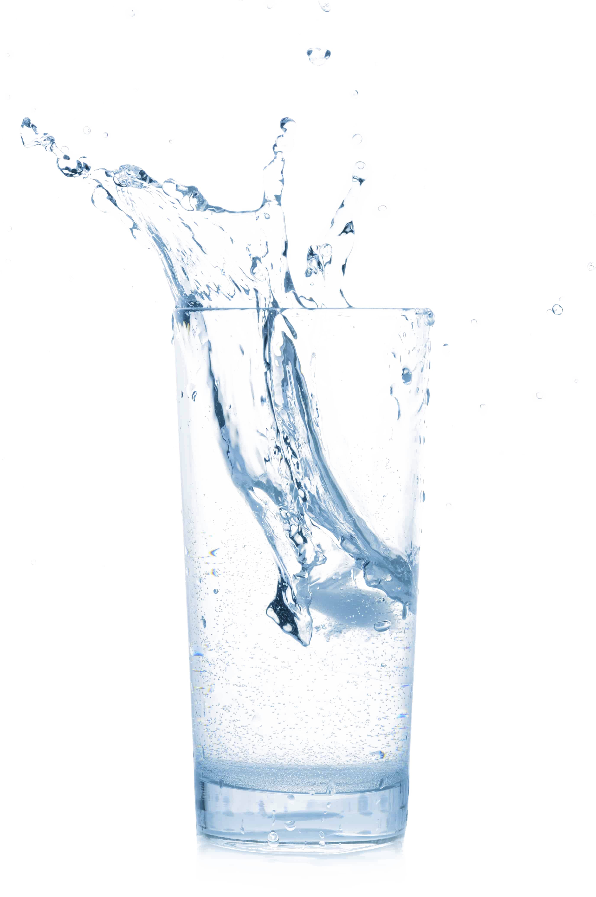

Fun Facts About Water
Water is great! Here is a list of fun facts about water that were found here.

- To create one pint of beer it takes 20 gallons of water.
- 70% of the human brain is water.
- Water expands by 9% when it freezes.
- Over 90% of the world’s supply of fresh water is located in Antarctica.
- NASA has discovered water in the form of ice on the moon.
Not As Fun Facts About Water
Sadly not all facts about water are as fun. Here are some not as fun facts about water that were found here.
- Unsafe water kills 200 children every hour.
- Three quarters of all Americans live within 10 miles of polluted water.
- Drinking too much water can be fatal (known as water intoxication).
- 80% of all illness in the developing world is water related.
- By 2025 half the world’s people will live in countries with high water stress.
This is a blue button.